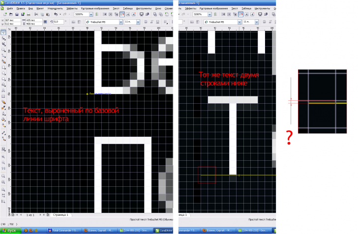
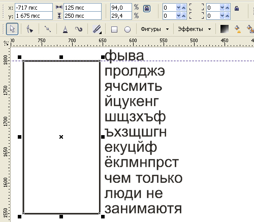
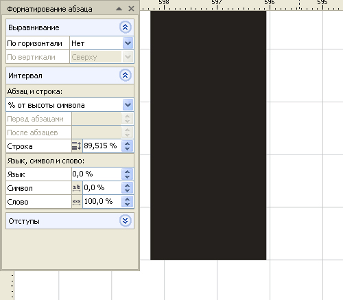
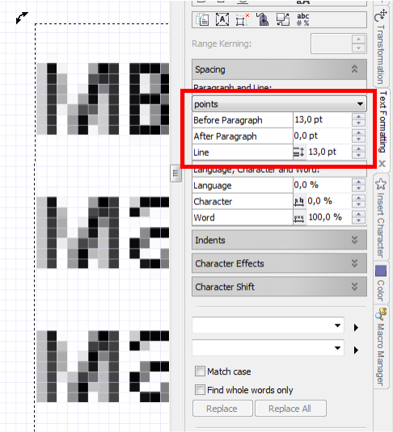

Подогнать абзац текста под пиксели
Zigzain / 20.12.2010, 16:53/00:41
Форум:
Подгоняю базовую линию шрифта начальной строки под пиксели, при этом двумя строками ниже наблюдается смещение, даже если сделать текст веб совместимым.
Как подогнать абзац текста под пиксели?

Считаю, что прав Sancho.
На рисунке ниже фрагмент текста размером шрифта 6 пт.
На втором рисунке с сильным увеличением показан низ нижней строки.
Линии сетки через каждый пиксел.
Попадание нижней строки было подогнано подбором межстрочного интервала
в окне Форматирование абзаца (параметр Строка, с точностью до тысячных долей предлагаемых единиц – процентов от высоты символа).


Это все верно, только в веб не бывает понятия пол-пикселя или 4/5 пикселя - только ровные значения, когда в Кореле может быть как угодно.
Solowejka, спасибо
Чё мутить то, сказал же использовать Pt. Тогда базовая линия будет попадать в пикселы.

Всем спасибо, разобрался. Sancho, вам отдельное спасибо за ценный докер!
Страницы